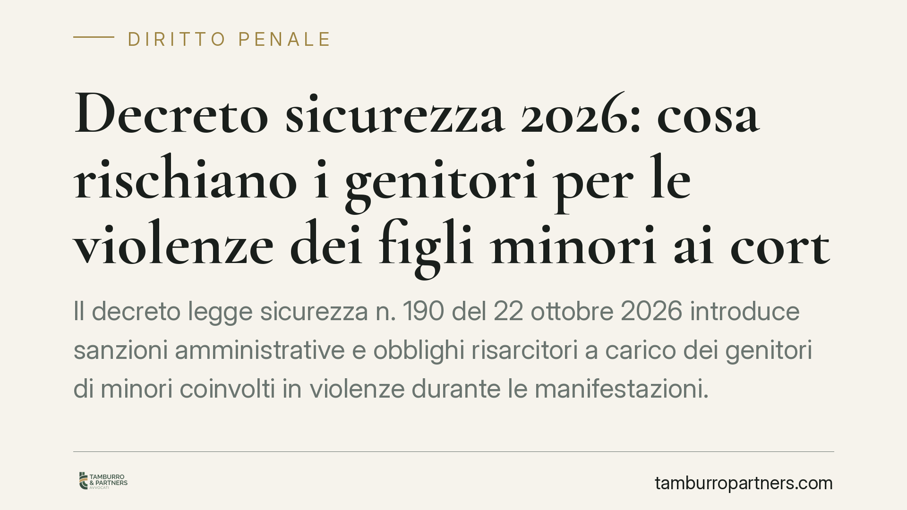

Decreto sicurezza 2026: cosa rischiano i genitori per le violenze dei figli minori ai cortei
Il decreto legge sicurezza n. 190 del 22 ottobre 2026 introduce sanzioni amministrative e obblighi risarcitori a carico dei genitori di minori coinvolti in violenze durante le manifestazioni. Trattandosi di decreto legge, le norme sono provvisorie e potranno cambiare in sede di conversione. Vediamo cosa prevede il testo e quali cautele adottare fin da subito.

Inquadramento normativo
Il D.L. n. 190 del 22 ottobre 2026 interviene sul contrasto alle violenze durante le manifestazioni pubbliche. Il testo prevede, a carico dei genitori di minori coinvolti in disordini, sanzioni amministrative pecuniarie comprese tra 500 e 1.000 euro, applicate dal Prefetto, oltre a possibili obblighi risarcitori verso danneggiati privati ed enti pubblici.
Una premessa essenziale. Si tratta di un decreto legge, cioè di un atto d'urgenza che il Governo adotta sotto la propria responsabilità. Ai sensi dell'art. 77 della Costituzione, il decreto perde efficacia fin dall'inizio se non viene convertito in legge dal Parlamento entro 60 giorni dalla pubblicazione. In sede di conversione le norme possono essere modificate, integrate o soppresse. Ciò significa che il quadro descritto in questo contributo è provvisorio e soggetto a cambiamenti: va seguito con attenzione l'iter parlamentare.
Il decreto prevede inoltre l'introduzione di una nuova fattispecie penale in materia di violenza organizzata nel corso di manifestazioni. La collocazione e la numerazione esatta del nuovo articolo nel codice penale devono essere verificate sul testo pubblicato in Gazzetta Ufficiale e sull'esito della conversione: non riportiamo qui un riferimento numerico finché non sia confermato in via definitiva, per evitare di indicare come vigente una norma ancora in formazione. Il decreto inciderebbe anche sulle regole di imputabilità dei minori nella fascia 14-18 anni.
La responsabilità dei genitori: due piani distinti
È importante tenere separati due profili che il decreto cumula.
La sanzione amministrativa pecuniaria (500-1.000 euro) ha natura punitiva: colpisce il genitore in quanto tale, a prescindere dall'entità del danno concreto. Viene irrogata con ordinanza-ingiunzione del Prefetto secondo il procedimento della legge n. 689/1981.
L'obbligo risarcitorio ha invece natura civilistica e si fonda sull'art. 2048 del codice civile, che pone a carico dei genitori la responsabilità per il fatto illecito del figlio minore che abita con loro. Questa responsabilità non è automatica: i genitori possono liberarsi provando di non aver potuto impedire il fatto (la cosiddetta prova liberatoria). In concreto, occorre dimostrare di aver adeguatamente educato e vigilato il minore: è la distinzione tra culpa in educando (difetto di educazione) e culpa in vigilando (difetto di sorveglianza). Il risarcimento è commisurato al danno effettivamente provocato, quindi può essere molto superiore alla sanzione amministrativa.
Imputabilità del minore e ne bis in idem
Sul piano penale restano i principi degli artt. 97 e 98 del codice penale: il minore di 14 anni non è mai imputabile; il minore tra 14 e 18 anni lo è solo se, al momento del fatto, era capace di intendere e di volere, valutazione affidata al giudice caso per caso.
Un profilo delicato riguarda il ne bis in idem, cioè il divieto di essere puniti due volte per lo stesso fatto. Quando una sanzione amministrativa di natura sostanzialmente punitiva si cumula con un procedimento penale (anche minorile) sui medesimi fatti, la giurisprudenza della Corte europea dei diritti dell'uomo e della Corte costituzionale impone di verificare la proporzionalità complessiva della risposta sanzionatoria. È un tema che potrà emergere nel contenzioso applicativo.
Implicazioni pratiche
Per un genitore, il rischio non è solo economico immediato. La sanzione e l'eventuale risarcimento possono sommarsi, con esborsi che superano l'importo della multa. A ciò si aggiunge il coinvolgimento del minore in un procedimento penale, con le ricadute personali e familiari del caso.
Trattandosi di norme nuove e provvisorie, è prevedibile un periodo di incertezza applicativa. Consigliamo di non assumere decisioni basate su interpretazioni affrettate del testo.
Cosa fare in concreto
- Verifica la notifica dell'ordinanza-ingiunzione del Prefetto e annota la data di ricezione: da quel momento decorrono i termini per reagire.
- Opponiti nei termini. L'opposizione all'ordinanza-ingiunzione va proposta ai sensi della legge n. 689/1981 entro 30 giorni dalla notifica, davanti al giudice competente (Giudice di pace o Tribunale secondo l'importo e la materia). Non lasciar decorrere il termine.
- Conserva ogni elemento utile a dimostrare l'adeguata educazione e vigilanza del minore (percorsi scolastici, rapporti con i servizi, misure adottate in famiglia): serve per la prova liberatoria ex art. 2048 c.c.
- Tieni distinti i due fronti, amministrativo e civile: richiedono difese e tempistiche diverse.
- Segui l'iter di conversione del decreto: le norme possono mutare entro i 60 giorni e incidere sulla tua posizione.
Contributo informativo a cura di Tamburro & Partners - Avv. Giuseppe Tamburro. Non costituisce parere legale.
Ogni condominio ha una storia a sé.
Se gestisci un'amministrazione e vuoi un confronto su una specifica questione condominiale, scrivi allo studio. Ti rispondiamo entro un giorno lavorativo.